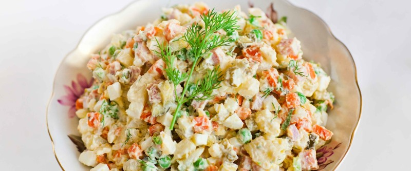

Винегрет

4 картофелины и две морковки помыть, отварить в кожуре и остудить. Сварить 4 яйца и остудить. Картофель, морковь и яйца почистить, нарезать кубиками, 400 гр. вареной колбасы, 6 маринованных огурцов тоже наризать, добавить банку зеленого горошка.
Все хорошенько перемешиваем, остужаем и заправляем майонезом.